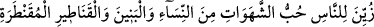
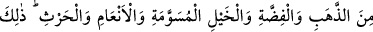
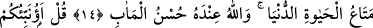

DÜNYA NİMETLERİNİN ALDATICILIĞI
14. Nefsânî arzulara, (özellikle) kadınlara, oğullara, yığın yığın biriktirilmiş altın
ve gümüşe, salma atlara, sağmal hayvanlara ve ekinlere karşı düşkünlük insanlara
çekici kılındı. Bunlar, dünya hayatının geçici menfaatleridir. Halbuki varılacak
güzel yer, Allah katındadır.
15. (Rasûlüm!) De ki: Size bunlardan daha iyisini bildireyim mi? Takvâ sahipleri
için Rableri yanında, içinden ırmaklar akan, ebediyyen kalacakları cennetler,
tertemiz eşler ve (hepsinin üstünde) Allah’ın hoşnutluğu vardır. Allah kullarını çok
iyi görür.
16. (Bu nîmetler) “Ey Rabbimiz! Îmân ettik; bizim günahlarımızı bağışla, bizi
ateş azabından koru!” diyen;
17. Sabreden, dürüst olan, huzurda boyun büken, hayra harcayan ve seher
vaktinde Allah’dan bağış dileyenler (içindir.)
İnsanlara âyette sayılan dünya metâları, bezenip süslendi; gözlerine güzel gösterildi.
Süsleyen, “onlara amellerini süsleyip güzel gösterdik” (Neml, 27/4) âyetine göre
Allah’tır. Bu, insanoğlunu imtihân etmek, denemek kabilindendir. Diğer bir yoruma göre
ise süsleyen “Şeytan onlara amellerini güzel gösterdi.” (Neml, 27/24) âyeti ışığında
şeytandır. Bu durumda süsleme vesvese kabilinden olur.
“Hubb-i şehevât”, yani nefislerin arzularının sevgisi insanların gözlerinde süslendi.
Şehvet, nefsin yerinden koparcasına istediği şeye meyledip akmasıdır. Bu ifade, masdar
bir kelimedir ki arzu edilen bütün şeyler anlamına gelir. Çünkü âyette zikrolunan bütün
maddeler başlıbaşına arzu duyulan şeylerdir. Bu maksadın masdarla ifade olunması,
sanki bunların arzunun bizzat kendisi gibi olması dolayısıyladır. Burada şehvetleri